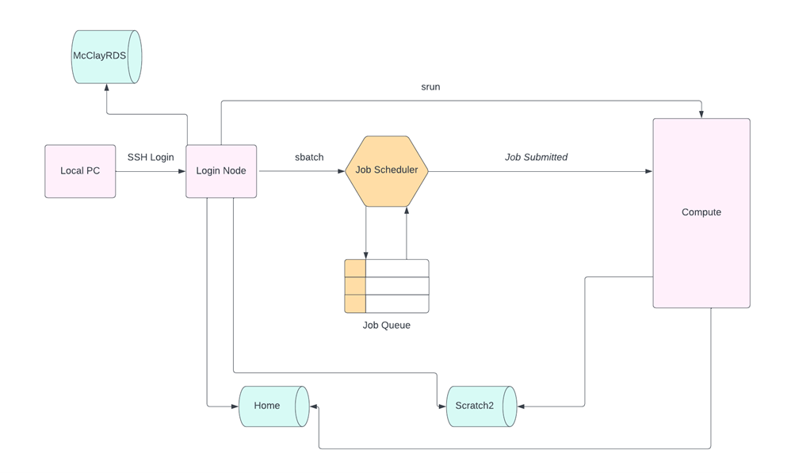

Job Submission
NI-HPC System Diagram

Job Handling
Slurm
Jobs on the cluster are under the control of a scheduling system, Slurm.
Jobs are scheduled according to the currently available resources and the resources that are requested. Information on how to request resources for your job are outlined here.
Jobs are not necessarily run in the order in which they are submitted.
Jobs needing a large number of cores, memory or walltime will have to queue until the requested resources become available in. The system will run smaller jobs, that can fit in available gaps, until all of the resources that have been requested for the larger job become available.
Always run jobs with the specific number of resources needed.
Submitting a Job
There are 2 classes of jobs that can be ran on Kelvin2.
- Non-interactive -
sbatch - Interactive -
srun
sbatch
Jobs are submitted via a job-script
To learn more about writing a jobscript see here.
Once you have created your jobscript you then submit it using the sbatch command and its name :
sbatch my_jobscript.sh
Once your job is submitted you will recieve a unique JOBID.
srun
srun is an interactive job - allows users to run interactive applications directly on a compute node.
To start an interactive job :
srun --pty /bin/bash
- Users should specify resources required to run.
- Input data is the shell session or application started.
- Output data is shown on screen or can be specified to write elsewhere.
Queue status
Once you have submitted your jobs using sbatch or srun, you can then view your queue status to see how your jobs are doing along with further information:
squeue -u <username>
Example squeue output :
JOBID PARTITION NAME USER ST TIME NODES NODELIST(REASON)
11 all mpiJob user1 PD 0:00 2 node101, node102
2 all serialJob user1 R 0:02 1 node101
Job states
Once you have executed the squeue command take note of the current state (ST) :
- Running jobs (R) - your job is currently running in the compute.
- Queuing jobs (PD) - your job is waiting for resources to become available to run
- Failed jobs (F)- your job submission has failed and should be delted from the queue.
Deleting jobs
If you need to delete a job from the current queue you can use the scancel command with the unique JOBID of the job.
scancel 8
Users can delete their own jobs only.
Slurm cheat sheet
Common job commands
| SGE | Slurm | |
|---|---|---|
| Submit a job | qsub |
sbatch |
| Delete a job | qdel |
scancel |
| Job status (all) | qstat showq | squeue |
| Job status (by job) | qstat -j |
squeue -j |
| Job status (detailed) | qstat -j |
scontrol show job |
| Show expected start time | qstat -j |
squeue -j |
| Start an interactive job | qrsh | srun --pty /bin/bash |
| Monitor jobs resource usage | qacct -j |
sacct -j |
Slurm Environmental variables
| Variable | Function |
|---|---|
| SLURM_ARRAY_JOB_ID | Job array's master job ID number. |
| SLURM_ARRAY_TASK_ID | Job array ID (index) number. |
| SLURM_CLUSTER_NAME | Name of the cluster on which the job is executing. |
| SLURM_CPUS_PER_TASK | Number of cpus requested per task. Only set if the --cpus-per-task option is specified. |
| SLURM_JOB_ACCOUNT | Account name associated of the job allocation. |
| SLURM_JOB_ID | The ID of the job allocation. |
| SLURM_JOB_NAME | Name of the job. |
| SLURM_JOB_NODELIST | List of nodes allocated to the job. |
| SLURM_JOB_NUM_NODES | Total number of nodes in the job's resource allocation. |
| SLURM_JOB_PARTITION | Name of the partition in which the job is running. |
| SLURM_JOB_UID | The ID of the job allocation. See SLURM_JOB_ID. Included for backwards compatibility. |
| SLURM_JOB_USER | User name of the job owner |
| SLURM_MEM_PER_CPU | Same as --mem-per-cpu |
| SLURM_MEM_PER_NODE | Same as --mem |
| SLURM_NTASKS | Same as -n, --ntasks |
| SLURM_NTASKS_PER_NODE | Number of tasks requested per node. Only set if the --ntasks-per-node option is specified. |
| SLURM_PROCID | The MPI rank (or relative process ID) of the current process. |
More information about Slurm commands, flags and environment variables, can be found in the Slurm web page.
Optimization
- Never run jobs on the login nodes. That will seriously disturb other users who are logged in. Login nodes are never to run jobs.
- Allocate interactive sessions with
srunif you need to run a job interactively, never use the login nodes. - Request the necessary resources for your job. Use the job analysis tool
sacctto check if you allocated more memory than the necessary for futures jobs with the same application. - Don't allocate more resources than necessary, that will increase the queue time, and will waste resources of the machine that could be used by other users.
- Try to spread the allocation among several nodes, 20 CPUs and 100 Gb of memory is a reasonable amount to be allocated in a single node.
- Don't allocate a big number of CPUs or a large amount of memory in a single node.
- Give freedom to Slurm to distribute the resources among the nodes, use the flags
--ntasksand--mem-per-cputo allocate resources per CPU preferably than per node. - Don't restrict the resources per node if possible, do not use the flags
--ntasks-per-nodenor--mem. - Never allocate more resources than available in the nodes. Review the training material for information about the resources per node in each partition.
- Allocate always the correct partition, double check the resources you require, in particular the wall time, and fit it in the particular partition. Check the partition table in the training material.
- Specify an error output different to the standard output. In case the job crashes, this output has useful information about why the job failed, so how it can be fix.
- Activate email notifications.